Element types
TODO: Describe types there
TODO: Types compare during search
| Graphical (SCg) | C | C++ |
|---|---|---|
| sc_type_node | ScType::Node | |
| sc_type_node | sc_type_const | ScType::NodeConst | |
| sc_type_node | sc_type_var | ScType::NodeVar | |
| sc_type_node | sc_type_const | sc_type_node_tuple | ScType::NodeConstTuple | |
| sc_type_node | sc_type_var | sc_type_node_tuple | ScType::NodeVarTuple | |
| sc_type_node | sc_type_const | sc_type_node_struct | ScType::NodeConstStruct | |
| sc_type_node | sc_type_var | sc_type_node_struct | ScType::NodeVarStruct | |
| sc_type_node | sc_type_const | sc_type_node_role | ScType::NodeConstRole | |
| sc_type_node | sc_type_var | sc_type_node_role | ScType::NodeVarRole | |
| sc_type_node | sc_type_const | sc_type_node_norole | ScType::NodeConstNorole | |
| sc_type_node | sc_type_var | sc_type_node_norole | ScType::NodeVarNorole | |
| sc_type_node | sc_type_const | sc_type_node_class | ScType::NodeConstClass | |
| sc_type_node | sc_type_var | sc_type_node_class | ScType::NodeVarClass | |
| sc_type_node | sc_type_const | sc_type_node_abstract | ScType::NodeConstAbstract | |
| sc_type_node | sc_type_var | sc_type_node_abstract | ScType::NodeVarAbstract | |
| sc_type_node | sc_type_const | sc_type_node_material | ScType::NodeConstMaterial | |
| sc_type_node | sc_type_var | sc_type_node_material | ScType::NodeVarMaterial | |
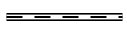 |
sc_type_edge_common | ScType::EdgeUCommon |
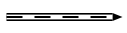 |
sc_type_arc_common | ScType::EdgeDCommon |
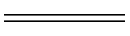 |
sc_type_edge_common | sc_type_const | ScType::EdgeUCommonConst |
| sc_type_edge_common | sc_type_var | ScType::EdgeUCommonVar | |
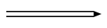 |
sc_type_arc_common | sc_type_const | ScType::EdgeDCommonConst |
| sc_type_arc_common | sc_type_var | ScType::EdgeDCommonVar | |
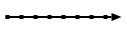 |
sc_type_arc_access | ScType::EdgeAccess |
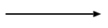 |
sc_type_arc_access | sc_type_const | sc_type_arc_pos | sc_type_arc_perm | ScType::EdgeAccessConstPosPerm |
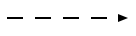 |
sc_type_arc_access | sc_type_var | sc_type_arc_pos | sc_type_arc_perm | ScType::EdgeAccessVarPosPerm |
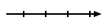 |
sc_type_arc_access | sc_type_const | sc_type_arc_neg | sc_type_arc_perm | ScType::EdgeAccessConstNegPerm |
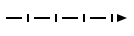 |
sc_type_arc_access | sc_type_var | sc_type_arc_neg | sc_type_arc_perm | ScType::EdgeAccessVarNegPerm |
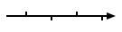 |
sc_type_arc_access | sc_type_const | sc_type_arc_fuz | sc_type_arc_perm | ScType::EdgeAccessConstFuzPerm |
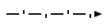 |
sc_type_arc_access | sc_type_var | sc_type_arc_fuz | sc_type_arc_perm | ScType::EdgeAccessVarFuzPerm |
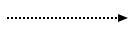 |
sc_type_arc_access | sc_type_const | sc_type_arc_pos | sc_type_arc_temp | ScType::EdgeAccessConstPosTemp |
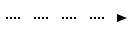 |
sc_type_arc_access | sc_type_var | sc_type_arc_pos | sc_type_arc_temp | ScType::EdgeAccessVarPosPerm |
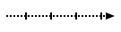 |
sc_type_arc_access | sc_type_const | sc_type_arc_neg | sc_type_arc_temp | ScType::EdgeAccessConstNegTemp |
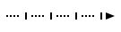 |
sc_type_arc_access | sc_type_var | sc_type_arc_neg | sc_type_arc_temp | ScType::EdgeAccessVarNegPerm |
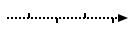 |
sc_type_arc_access | sc_type_const | sc_type_arc_fuz | sc_type_arc_temp | ScType::EdgeAccessConstFuzTemp |
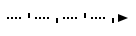 |
sc_type_arc_access | sc_type_var | sc_type_arc_fuz | sc_type_arc_temp | ScType::EdgeAccessVarFuzPerm |